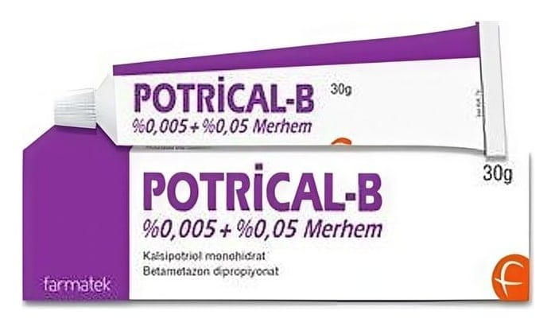

Potrical-B %0,005 + %0,05 Merhem, 30 Gram

Ne için kullanılır
KT · Bölüm 1POTRİCAL-B kalsipotriol (D vitaminine benzer bir madde) ve betametazon (bir steroid) etkin maddelerini içerir. Kalsipotriol deri hücrelerinin büyüme oranının normale dönmelerini sağla r. B ir kortikosteroid olan betametaz on iltihabın (en flamasyon) azalmasını sağlar (bazı vücut geliştiriciler ve atletler tarafından hatalı bir şekilde kullanılan anabolik steroidlerle karışt ırılmamalıdır).
POTRİCAL-B sedef h astalığının (psoriasis vulgaris) tedavisi için kullanılır. Sedef hastalığı, deri hücreleri çok hızlı çoğalmaya başladığı zaman oluşur. Bu, kızarıklık, pullanma ve derinin kalınlaşmasına neden olur.
POTRİCAL-B sedef hastalığının belirtilerini tedavi eder ve hızla çoğalan derideki hücrelerin normale dönmesine yardımcı olur.